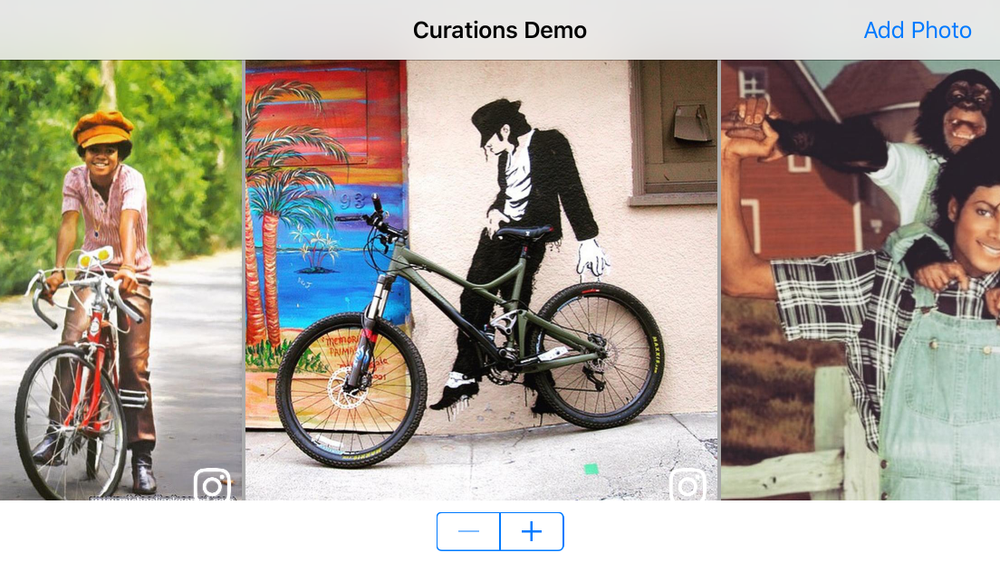

Important: Before you start implementing this Mobile SDK module, verify your installation by checking the steps on the Installation and Configuration page.
Curations support from the Bazaarvoice Mobile SDK allows you to rapidly implement your custom social feeds with only a few lines of code. Display social media feeds on your home page or product page with social content tagged to your product catalog.
Depending on your application requirements, there are two ways to fetch your Curations data for display:
- BVCurationsUICollectionView (recommended) - Use our custom, sub-classed UICollectionView controller to handle the entire display, scrolling, and paging.
- API Direct - If you have UI customization that don't fit a UICollectionView, you can call the API directly to fetch the Curations feed items you need for display.
/Examples/Curations. For a more comprehensive demonstration of the Conversations API, please also see the BVSDKDemo project under /Examples/BVSDKDemo.
You must have Bazaarvoice Curations enabled to use the Curations module. Contact Bazaarvoice to set up Curations and to get your Curations API Key.
BVCurationsUICollectionView
The BVSDK comes with a ready-to-roll display inBVCurationsUICollectionView class. This subclass of a UICollectionView handles all the flow layout, scrolling, API fetch requests, infinite scroll and adds proper badges for the social channel of each cell. If you are familiar with the fundamentals of a UICollectionView, this integration will be a snap!
Once you have the basic display set-up, you will be required to:
- Implement the
BVCurationsUICollectionViewDelegaterequired methods. - Provide your own image loading and caching (e.g. SDWebImage).
- Handle any redrawing or layout adjustments for screen rotations
You may optionally, but are encouraged to, handle the following:
- Handle user interaction events for when a user taps a
BVCurationFeedItem. - Handle errors that may occur while loading Curations content


Code Example: Using the BVCurationsUICollectionView
The code demo shows a minimal implementation to display a
BVCurationsUICollectionView in a View Controller. The demo uses SDWebImage to perform asynchronous loading and caching of the images displayed in the Collection View Cells.
import UIKit
import BVSDK
import SDWebImage
class ViewController: UIViewController, BVCurationsUICollectionViewDelegate {
@IBOutlet weak var curationsCollectionView: BVCurationsUICollectionView!
let sdMngr = SDWebImageManager.shared()
override func viewDidLoad() {
super.viewDidLoad()
// Set up the Curations UI display properties
curationsCollectionView?.curationsDelegate = self
curationsCollectionView?.groups = ["__all__"]
// Other optional properties
curationsCollectionView?.fetchSize = 40
curationsCollectionView?.infiniteScrollEnabled = true
curationsCollectionView?.itemsPerRow = 2
curationsCollectionView?.bvCurationsUILayout = .grid
// Makes the asynchronous API call to load the Curations feed
curationsCollectionView?.loadFeed()
}
private func loadImage(imageUrl: String, completion:@escaping ((UIImage, String) -> Void)) {
_ = self.sdMngr.loadImage(with: NSURL(string: imageUrl)! as URL,
options: [],
progress: { (_, _, _) in
}, completed: { (image, _, _, _, _, url) in
if let img = image {
completion(img, imageUrl)
}
})
}
// MARK: BVCurationsUICollectionViewDelegate
func curationsLoadImage(_ imageUrl: String, completion: @escaping BVSDK.BVCurationsLoadImageCompletion) {
self.loadImage(imageUrl: imageUrl, completion: completion)
}
func curationsImageIsCached(_ imageUrl: String, completion: @escaping BVCurationsIsImageCachedCompletion) {
self.sdMngr.cachedImageExists(for: NSURL(string: imageUrl) as URL?) { (cached) in
completion(cached, imageUrl)
}
}
func curationsDidSelect(_ feedItem: BVCurationsFeedItem) {
print("Tapped: " + feedItem.debugDescription)
}
func curationsFailed(toLoadFeed error: Error) {
//Unable to get next batch of content. Handle error.
print("An error occurred: " + error.debugDescription)
}
}
#import "ViewController.h"
#import "ViewController.h"
#import <SDWebImage/SDWebImageManager.h>
@import BVSDK;
@interface ViewController ()
@end
@implementation ViewController
- (void)viewDidLoad {
[super viewDidLoad];
// Set up the Curations UI display properties
self.curationsCollectionView.curationsDelegate = self;
self.curationsCollectionView.groups = @[@"__all__"];
// Other optional properties
self.curationsCollectionView.fetchSize = 40;
self.curationsCollectionView.infiniteScrollEnabled = YES;
self.curationsCollectionView.itemsPerRow = 1;
self.curationsCollectionView.backgroundColor = [UIColor lightGrayColor];
self.curationsCollectionView.bvCurationsUILayout = BVCurationsUILayoutGrid;
// Makes the asynchronous API call to load the Curations feed
[self.curationsCollectionView loadFeed];
}
// MARK: BVCurationsUICollectionViewDelegate
- (void)curationsLoadImage:(NSString *)imageUrl completion:(BVCurationsLoadImageCompletion)completion {
[[SDWebImageManager sharedManager] loadImageWithURL:[NSURL URLWithString:imageUrl] options:kNilOptions progress:^(NSInteger receivedSize, NSInteger expectedSize, NSURL * _Nullable targetURL) {
// progress
} completed:^(UIImage * _Nullable image, NSData * _Nullable data, NSError * _Nullable error, SDImageCacheType cacheType, BOOL finished, NSURL * _Nullable imageURL) {
completion(image, imageUrl);
}];
}
- (void)curationsImageIsCached:(NSString *)imageUrl completion:(BVCurationsIsImageCachedCompletion)completion {
[[SDWebImageManager sharedManager] cachedImageExistsForURL:[NSURL URLWithString:imageUrl] completion:^(BOOL isInCache) {
completion(isInCache, imageUrl);
}];
}
- (void)curationsDidSelectFeedItem:(BVCurationsFeedItem *)feedItem {
// Handle your click logic here...
NSLog(@"Selected item: %@", feedItem.description);
}
-(void)curationsFailedToLoadFeed:(NSError *)error {
// Unable to get next batch of content. Handle error
NSLog(@"An error occurred: %@", error);
}
@end Curations API Direct
Calling the Curations API with the BVSDK requires the use of two class instances and one response object:
- BVCurationsFeedRequest - Set the required parameters in the default initializer, and optional parameters in the class properties.
- BVCurationsFeedLoader - Makes the asynchronous request with success and failure blocks. If there are any network or API failures, they will be in an
NSErrorobject. - BVCurationsFeedItem - On a successful result, you will have an array of social feed items you can display in your UI.
Code Example: Using the Curations Display API
You can copy/paste the code below for a starter.let feedRequest = BVCurationsFeedRequest(groups: ["__all__"])
// Set any other optional parameter, like geo-coordinates. See the BVCurationsFeedRequest header for fields.
feedRequest?.externalId = "productId"
feedRequest?.withProductData = true
let loader = BVCurationsFeedLoader()
loader.loadFeed(with: feedRequest, completionHandler: { (feedItems) in
// success
for item : BVCurationsFeedItem in feedItems! {
print(item)
}
}) { (error) in
// error
print(error)
}BVCurationsFeedRequest *feedRequest = [[BVCurationsFeedRequest alloc] initWithGroups:@[ @"__all__" ]];
// Set any other optional parameter, like geo-coordinates. See the BVCurationsFeedRequest header for fields.
[feedRequest setLatitude:30.2 longitude:-97.7];
[feedRequest setExternalId:@"productId"];
[feedRequest setWithProductData:YES];
BVCurationsFeedLoader *urlRequest = [[BVCurationsFeedLoader alloc] init];
[urlRequest loadFeedWithRequest:feedRequest completionHandler:^(NSArray *feedItems) {
// success!
for (BVCurationsFeedItem *item in feedItems){
NSLog(@"%@", item.debugDescription);
}
} withFailure:^(NSError *error) {
// failure : (
NSLog(@"Error loading feed: %@", error.localizedDescription);
}];Author
Copyright 2017 Bazaarvoice, Inc. All rights reserved.
License
Use of the Bazaarvoice Mobile SDKs is contingent on your agreement and conformance with Bazaarvoice's API Terms of Use. Additionally, you agree to store all data acquired by the SDK or Bazaarvoice's API only within the storage of the individual application instance using the SDK or API. You also agree to use the data acquired by the SDK or API only within the context of the same individual application instance and only for purposes consistent with that application's purpose. Except as otherwise noted, the Bazaarvoice Android and iOS SDKs are licensed under the Apache License, Version 2.0.